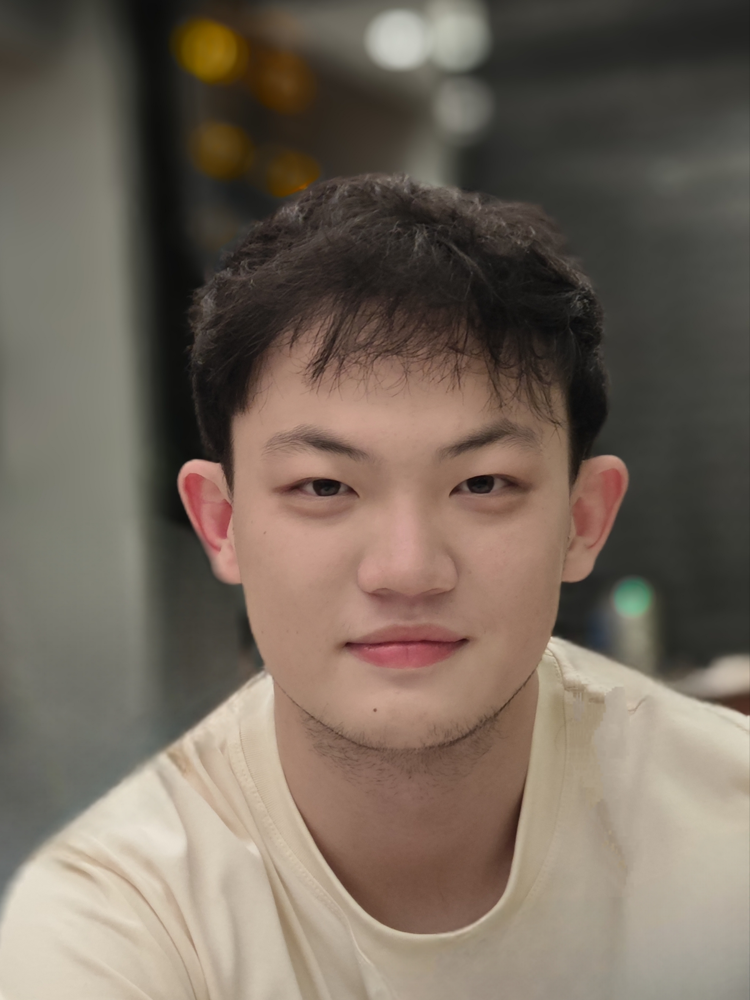

Ziteng Wang
Undergraduate
|
 |
My research focuses on multimodal AI. Specifically, I work on multimodal alignment, perception and understanding. I also want to explore the following topics in the future (1)Unified framework for multimodal understanding and generation (2)Efficient RL framework for MLLMs post-training (3)Vison Language Action model that interacts with the physical world
[Paper]
| NeurIPS Student Scholar Award | 2025 |
| University of Aberdeen Academic Achievement Award (3.75 cGPA or higher) | 2021-2025 |